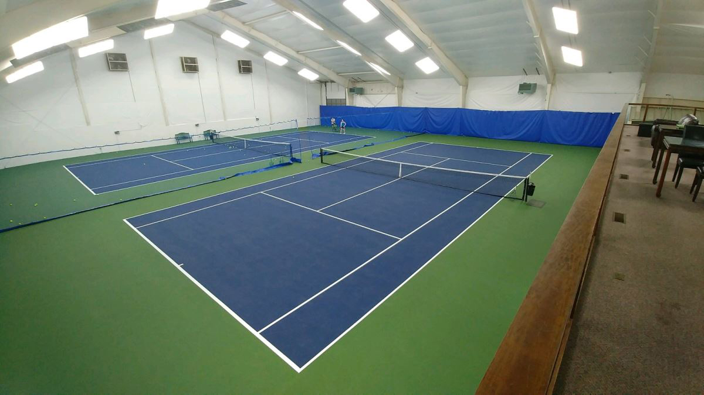
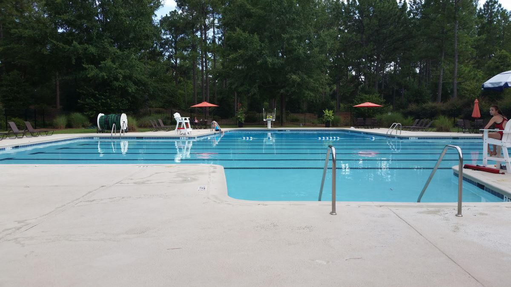
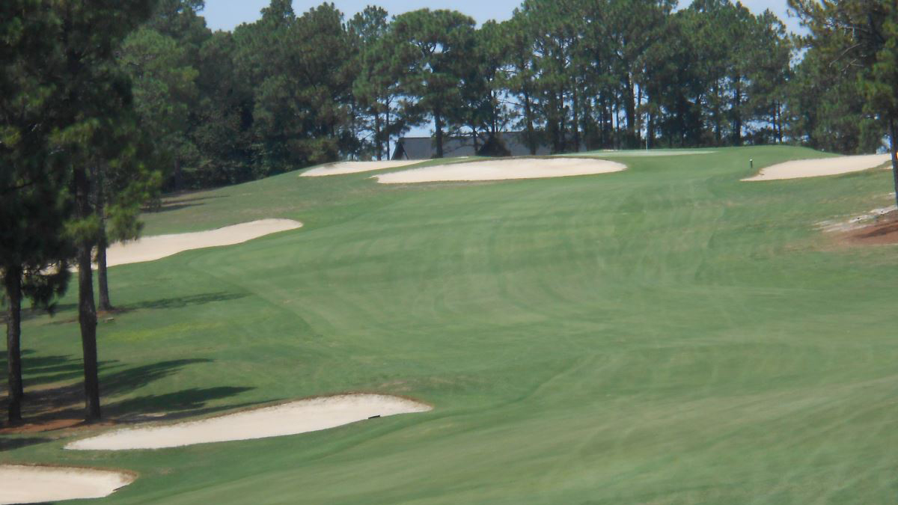
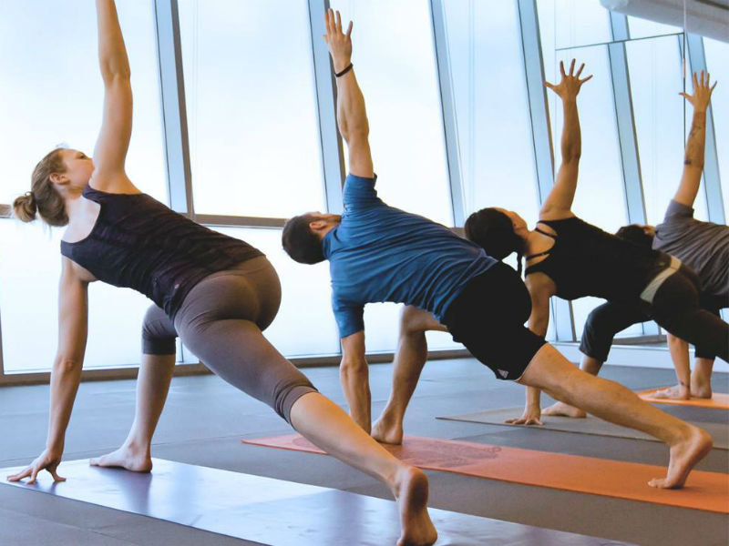

Welcome to a New Day at the Mass Club!
We hope you will consider becoming a member of this Community Based Club that offers affordable memberships for everyone.
Tennis Facility
Indoor/Outdoor Lighted Courts.
The Tennis facilities at the Mass Club include four lighted clay courts, four lighted hard courts and two climate controlled indoor hard courts. Tennis members enjoy a robust program with both social matches and opportunities to participate on one of our competitive USTA teams.Since tennis is a year-round sport, our members enjoy a comprehensive range of activities for men, women and juniors. With a full time tennis pro on site, we offer all levels of lessons and clinics to our members.
Swim Facility
Family Friendly Environment.
Swim offers access to the regulation size pool for sanctioned competitions. The pool opens from May to October with the possibility of an extended open season. Lifeguards and typical amenities on site. A new Splash Pad is being added as one of the first capital improvements. Social offers include your participation in organized events, special functions, access to the facilities for private events and ongoing opportunities to build neighborhood fellowship. A new playground will be added for member use in the coming months.
Golf Course
The Mass Club Golf Course.
The golf course Built on over 160 acres, there is not a single parallel fairway as the course unfolds through the rolling terrain of the Sandhills. The layout is fair, yet challenging for all players, with excellent course conditions and Tif-Eagle Bermuda greens. Each hole is framed by great oak and pine trees making it one of the most playable golf courses in the area. Our professional staff offers lessons for all level players including juniors. We enjoy a driving range, practice putting green, pro shop and Pub.
Yoga Course
The Mass Club Yoga Studio.
Give it a try - we have a feeling you'll love it. Our classes are open to everyone, at every fitness level, no experience required.Mass Club offers a physically intense workout rooted in the mindfulness of yoga. Our goal is to share the transformative power of yoga with every body, everywhere.Membership gives you the freedom to breathe, flow and sweat with us anytime.